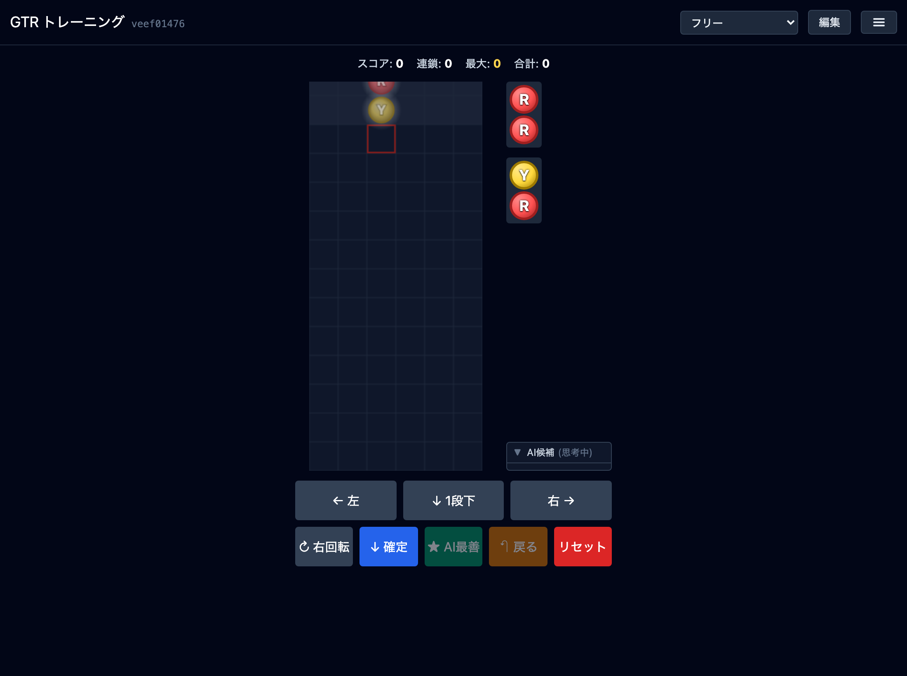
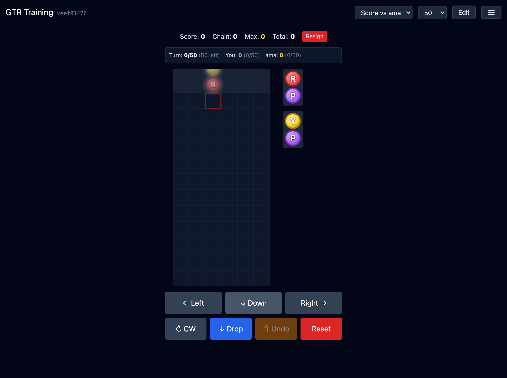
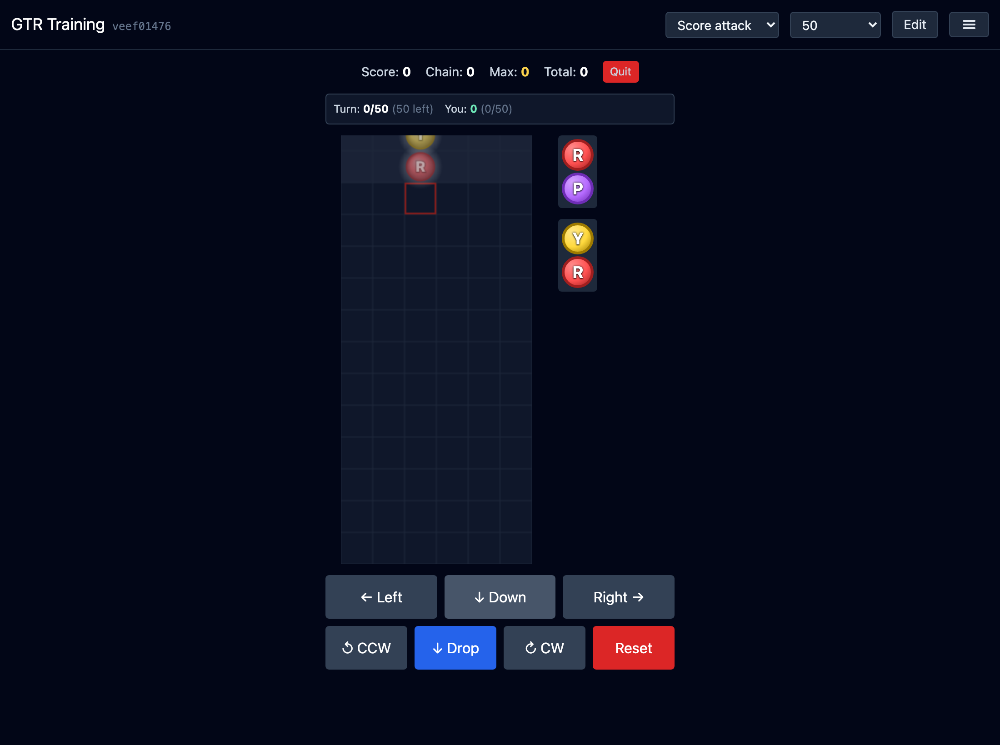
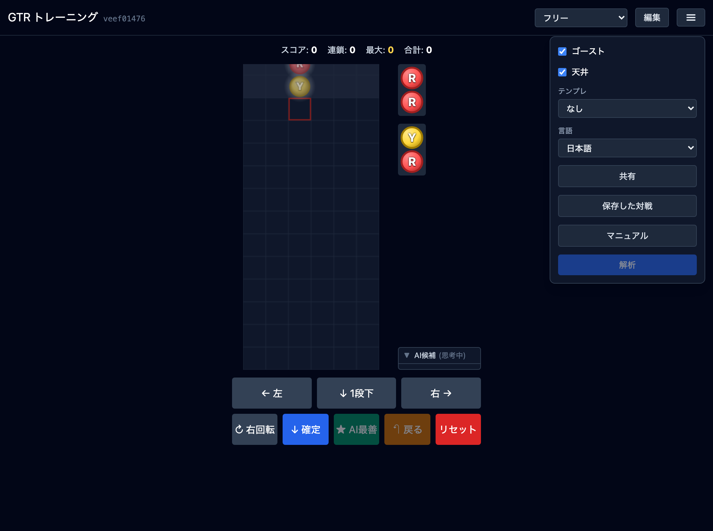
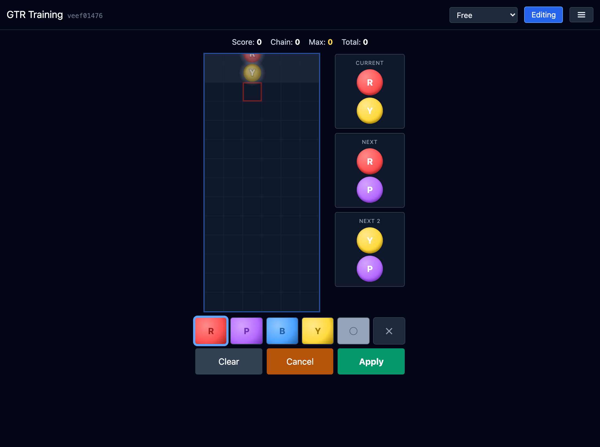
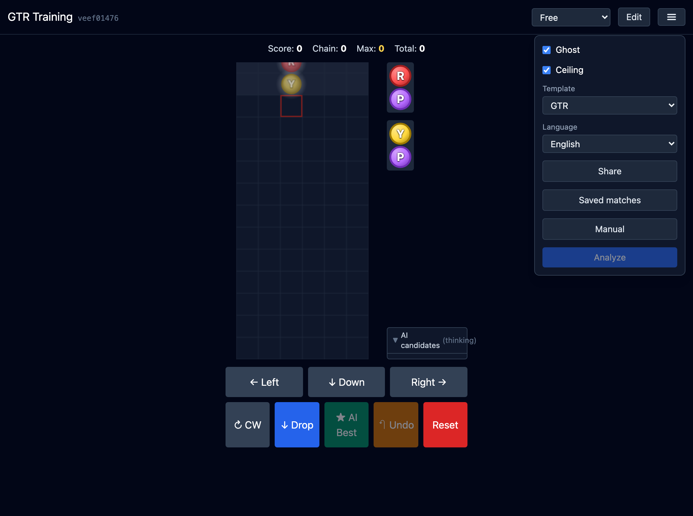
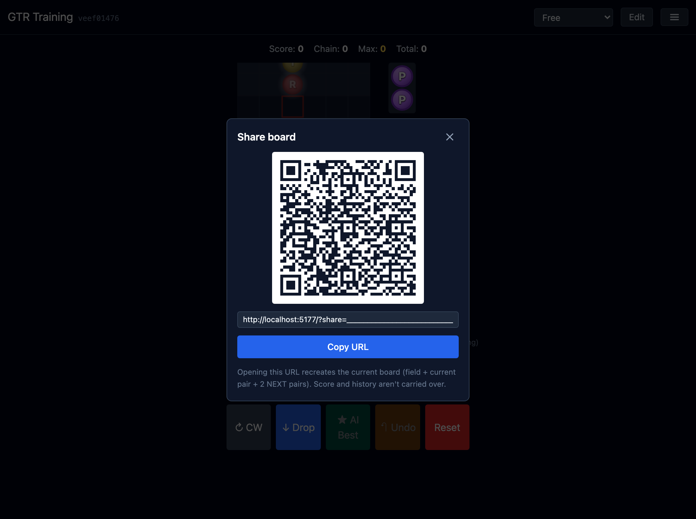
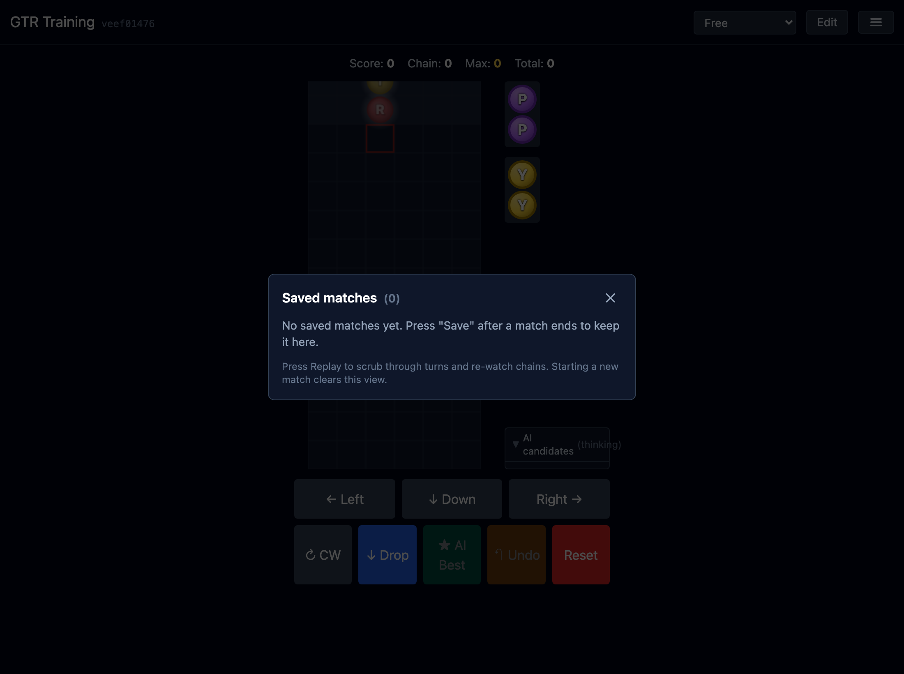

GTR トレーニング マニュアル
AI(ama) と一緒に GTR / 階段などの定形連鎖を練習できる、ぷよシミュレータの使い方ガイドです。
アプリの目的
GTR トレーニング(リポジトリ名: puyo-simulator)は、
ぷよ系落ちものパズルの代表的な定形連鎖である GTR や 階段 を、
AI のヒントとともに反復練習するためのウェブアプリです。
- AI には ama(MIT ライセンス)を WebAssembly / ネイティブで組み込み、毎手の最善手と上位 5 候補を出します。
- ブラウザだけで動く PWA。インストールするとオフライン起動できます。
- テンプレ機能は GTR / 階段の完成度を AI に重み付けさせて、組み筋に沿った提案を返します。
- 対戦(対 ama)、スコアアタック、フリーモードの 3 種類の遊び方があります。
画面の見方

主要なエリアは次の通りです。
| エリア | 役割 |
|---|---|
| ヘッダー | アプリ名 / バージョン(短い SHA)/ モード切替 / 編集ボタン / ハンバーガーメニュー |
| スコア表示 | Score(連鎖の得点)・Chain(現在の連鎖数)・Max(最大連鎖)・Total(累積) |
| 盤面(Board) | 6 列 ×12 段。上 1 段は天井(ぷよが入ると窒息ライン)。赤枠は軸ぷよのドロップ予定列。 |
| NEXT | 盤面右に積まれている 2 組のペア。次に来るぷよを先読みする情報源です。 |
| AI 候補(AI candidates) | ama が上位 5 手を %(評価値)で表示。Go ボタンでその手を実行できます。 |
| コントロール | ← / Down / → / CW(回転)/ Drop / AI Best / Undo / Reset。タッチ操作と物理キーの両方で動きます。 |
操作方法
キーボード
| キー | 動作 |
|---|---|
| ← / → | 左右に 1 列移動 |
| ↓ | ソフトドロップ(1 段下) |
| X | 右回転(CW) |
| Z | 左回転(CCW) |
| ↑ / Space | 確定(現在の列・回転で着地させる) |
| U または Ctrl/⌘ + Z | 1 手戻る |
タッチ操作(スマホ)
- 盤面を左右にスワイプ:左右移動
- 盤面を下スワイプ:ソフトドロップ
- 盤面をタップ:回転(タップした側に応じて CW / CCW)
- 画面下のボタン群でも同じ操作が可能
画面下のボタン
- Drop(↓) — 現在の軸列・回転で確定して落とす。
- ★ AI Best — ama の最善手を即実行。連続押しで AI 自走。
- Undo(↶) — 1 手戻る。マッチ中も使えます(ama 側は取り消されません)。
- Reset — 盤面と種(seed)をリセット。確認ダイアログが出ます。
ゲームモード
ヘッダー左のモードセレクタで 3 種を切り替えます。
1. フリー(Free)
手数制限なし、AI 候補表示あり。学習・探索向けの基本モードです。 AI 候補を見ながら自分の手を選び、たまに AI Best で最善を確認、 合わなければ Undo して別の手を試す、といった反復練習に向いています。
2. 対 ama スコア勝負(Score vs ama)

固定手数(30 / 50 / 100)を消化し、累計スコアの高い側が勝ちです。同じ seed で同じ盤面・同じ NEXT を進行するので、純粋に手の選択力で勝負できます。AI 候補は表示されません。
- 右の Resign(投了)ボタンで途中終了できます。
- マッチ終了後にメニューから「保存した対戦」に保存できます(後でリプレイ可能)。
3. スコアアタック(Score attack)

AI と勝負しない一発勝負モード。スコアサーバに送信して短縮 URL でリプレイ共有可能。手数は 200・無制限まで選択できます。
テンプレ機能(Trainer)

ハンバーガーメニュー →「テンプレ」で AI の重み付け(preset)を切替えます。
- なし — 標準のビーム探索(
buildプリセット)。 - GTR — GTR の鍵・折り返しを高得点化した重み。提案手が GTR の組み筋に沿いやすくなります。
- 階段 — 階段積みの土台を優先する重み。
テンプレを変えると、フリーモードの AI 候補表示と、対 ama 戦の ama 自身の打ち方が連動して変わります。
編集モード

ヘッダーの「編集」を押すと編集モードに入ります(マッチ中の場合は確認ダイアログで中断確認)。
- パレット下段の R / P / B / Y から色を選び、盤面のセルをタップして配置します。
- ○(消去)で空セルに戻す、×(おじゃま)でおじゃまぷよを置けます。
- 右側の Current / NEXT / NEXT2 をタップして、現在ペア・先読み 2 組を編集できます。
- Apply で編集確定、Cancel で破棄、Clear で盤面をすべて空に。
メニューと表示設定

- ゴースト(Ghost) — 現在ぷよの落下予定位置をうっすら表示。練習向け。
- 天井(Ceiling) — 12 段目より上(窒息ライン)の枠表示の ON/OFF。
- テンプレ — 上述の AI 重み(GTR / 階段)。
- 言語 — UI 表示を 日本語 / English / 中文 / 한국어 に切替(本マニュアルとも連動)。
- 共有 — 現在の盤面を URL にエンコード。
- 保存した対戦 — マッチ後に保存したリプレイ一覧。
- マニュアル — 別タブでこのマニュアルを開きます。
- 解析 — フリー / 終了済みマッチの自分の手を ama に再評価させ、AI 一致率と AI 評価値(%)を出します。
共有・保存・解析
盤面共有(Share)

メニューの「共有」で表示される URL を開くと、相手側で同じ盤面が再現されます。スコア・履歴は引き継がれません。
リプレイ共有
スコアアタック / マッチ終了画面の「リプレイを共有」では、seed と着手列 をエンコードした URL を作れます。サーバ送信して短縮 URL に変換することも可能です(?score=<id> でロード)。
保存した対戦(Records)

対戦の seed と着手列だけ保持しているので、ストレージはごく軽量。再生中はターンごとにステップして連鎖アニメーションを見返せます。
解析(Analyze)
フリーで打ち終わった、またはマッチが終了した状態でメニューの「解析」を押すと、各手を ama に再評価させ次の指標を出します。
- AI 一致率 — 自分の手が ama の最善手と一致した割合(AI Best ボタンで打った手は除外)。
- AI 評価値(%) — 自分の手が ama の最善手スコアの何 % だったかの平均(ama 上位 5 候補に入った手のみ)。
PWA / ネイティブ版
本アプリは PWA に対応しており、Chrome / Safari の「ホーム画面に追加」でアプリ風に常駐させられます。オフライン起動も可。
macOS / Android では Tauri ネイティブ版 も提供されており、ama を C++ ネイティブライブラリ(Rust FFI)で呼び出すため、AI 思考が p99 で 200ms 以内になります(Intel Mac 実測)。
用語
| 軸ぷよ | ペアの中心となるぷよ。回転の中心。盤面では赤枠で示されます。 |
| 連鎖 | 同色 4 つ以上を消したことで上のぷよが落ち、それが再び消える反応。 |
| GTR | ぷよぷよ通系の代表的な定形。L 字の鍵 + 折り返し。 |
| 階段 | 左から右に階段状に色を並べて連鎖を組む定形。 |
| 窒息 | 盤面 13 段目以上にぷよが置かれゲームオーバーになること。 |
| seed | NEXT 列を生成する乱数のシード。共有時はこれを伝えると同じ並びを再現できます。 |
| ama | 本アプリ同梱の AI(citrus610 製、MIT)。ビームサーチ + ヒューリスティクス。 |